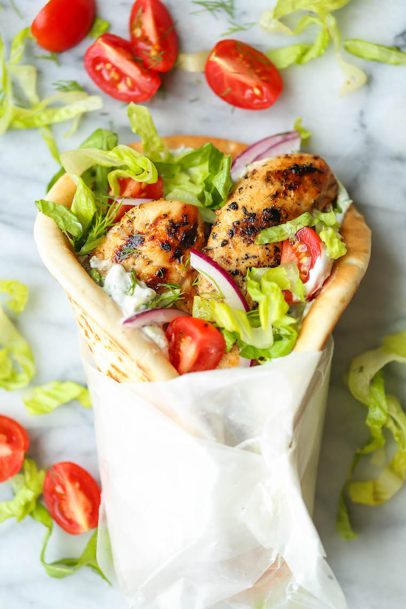

Greek Chicken Gyros

Description
Can't get enough of your favorite Greek restaurant's gyros? Try this quick and easy chicken gyro recipe for something just as delicious, but far better for you! Yogurt-marinated chicken tenders, packed with flavor from warm spices, and loaded into a pita wrap with homemade tzatziki sauce and all the fixings you love!
Ingredients
Base Ingredients
- 2 pounds chicken tenderloins
- 1 1/2 tablespoons olive oil
- 1 tablespoon freshly squeezed lemon juice
- 3 cloves garlic, minced
- 2 teaspoons dried oregano
- 1 teaspoon dried thyme
- 1/2 teaspoon paprika
- Kosher salt and freshly ground black pepper, to taste
- 6-8 pita flatbreads
- 2 cups shredded romaine
- 2 cups cherry tomatoes, quartered
- 1 red onion, thinly sliced
For the Tzatziki Sauce
- 3/4 cup Greek yogurt
- 1/2 cup grated English cucumber, squeezed dry
- 2 tablespoons chopped fresh dill
- 2 tablespoons freshly squeezed lemon juice
- 2 teaspoons lemon zest
- 1 clove garlic, minced
- Kosher salt and freshly ground black pepper, to taste
Instructions
- To make the tzatziki sauce, combine Greek yogurt, cucumber, dill, lemon juice, lemon zest and garlic; season with salt and pepper, to taste. Set aside in the refrigerator until ready to serve.
- In a gallon size Ziploc bag, combine chicken, olive oil, lemon juice, garlic, oregano, thyme, paprika, 1 teaspoon salt and 1/2 teaspoon pepper. Marinate for at least 2 hours, turning the bag occasionally. Drain the chicken from the marinade, discarding the marinade.
- Preheat grill to medium heat. Add chicken to grill, and cook, turning occasionally, until chicken is completely cooked through, reaching an internal temperature of 165 degrees F, about 8 minutes.
- To serve, warm pitas on the grill, about 1-2 minutes per side. Halve pitas, and fill with chicken, romaine lettuce, tomatoes, red onion and tzatziki sauce.
- Serve immediately.
Home